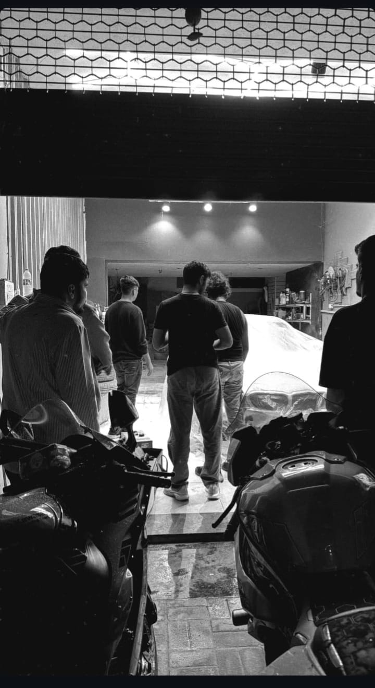

Password strength checker
Create a small program that checks length and character variety, then explains ways to make a password stronger.
BCA Cyber Security · REVA University
I’m Abhinav VP, from Kerala, studying cyber security at REVA University. I’m interested in technology, martial arts, modelling, motorcycles, and travel.

A little about me
I’m Abhinav, from Kerala, currently pursuing a BCA in Cyber Security at REVA University. I like figuring out how things work, building new skills, and taking on challenges that keep me learning.
Outside class, I train in Judo and Karate, enjoy modelling and motorcycles, and like travelling. At home, I’m also lucky to have 10 cats.
Current studies
Cyber Security · REVA University
Based in Karnataka for my studies, with roots in Kerala.
Growing my toolkit
I’m developing my technical skills through study and practice.
Building hands-on experience
These are learning projects I can build as I develop my Python, C, and cyber security skills. I’ll add completed work here as it’s ready.
Create a small program that checks length and character variety, then explains ways to make a password stronger.
Explore how a file’s hash can help identify whether its contents changed between two checks.
Use a guided lab or sample capture to identify common protocols and write a short, beginner-friendly observation report.
Practice only on systems and sample data you own or are explicitly allowed to use.
Black belt in Judo and Karate. National-level competition winner.
Three national titles and two international titles.
Growing through study, training, travel, and new experiences.
Beyond the classroom
The things I love learning about and doing.

Dirt biking, discovering new bikes, and exploring their performance.

One day, I’d love a garage filled with motorcycles and cars.

I enjoy learning about bike performance and watching skilled riders on the track.

I love discovering new places and hope to explore more of the world.

World Junior Ambassador 2026.

Most Charming Award · 1st Runner-up.
Looking ahead
My focus is growing my cyber security skills while staying open to new experiences. I hope to keep exploring new places and, someday, build the motorcycle-and-car garage I imagine.
08 / Get in touch
I’m open to conversations about technology, learning, and new opportunities. Choose the easiest way to reach me.